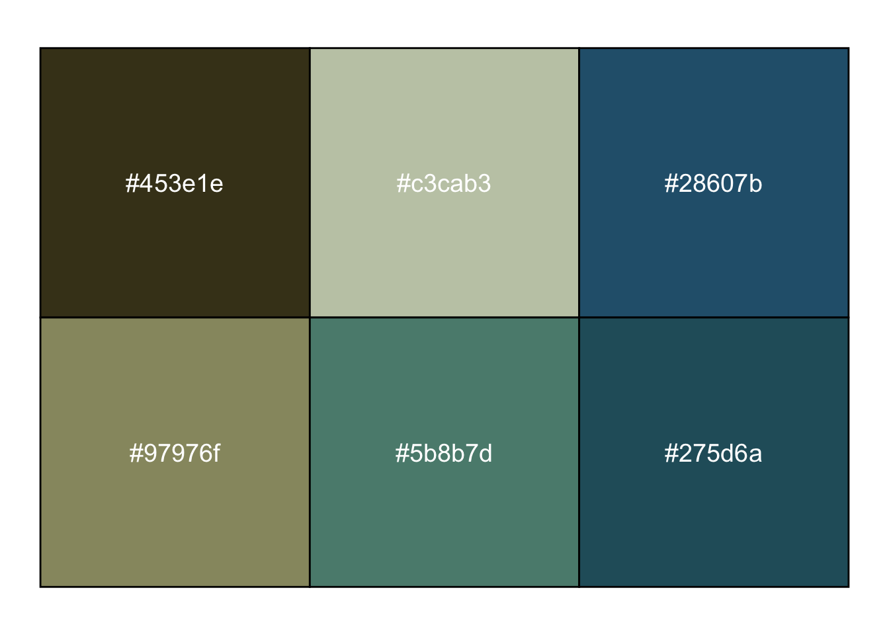
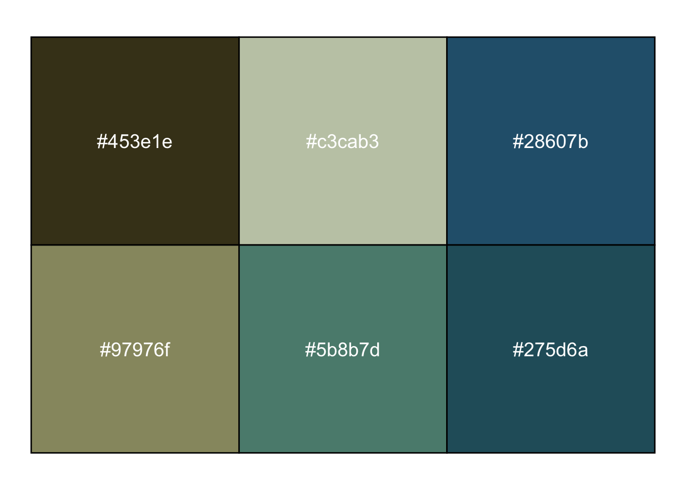
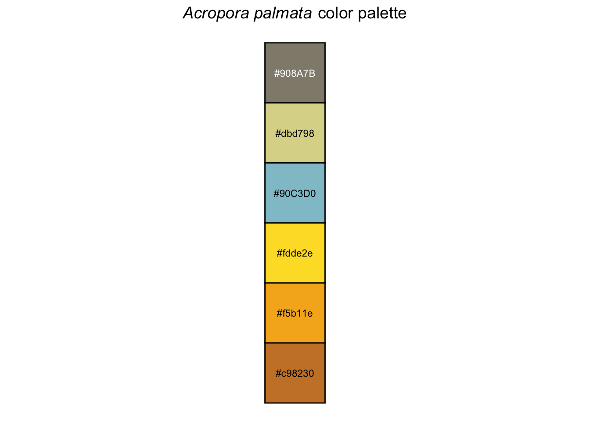

Code
library(coralcolors)
show_colors(coral_palettes$acropora1)
show_colors()
show_colors() is a ggplot conversion of scales::show_col() allowing nrow/ncol, label_size and label_color, and title flexibility:
library(coralcolors)
show_colors(coral_palettes$acropora1)
library(coralcolors)
show_colors(
colours = coral_palettes$acropora2,
ncol = 1,
label_size = 3,
title = expression(paste(italic("Acropora palmata"), " color palette")),
label_color = c("white", rep("black", 5))
)
plot_palette_plotly()
plot_palette_plotly(coral_palettes$montipora)